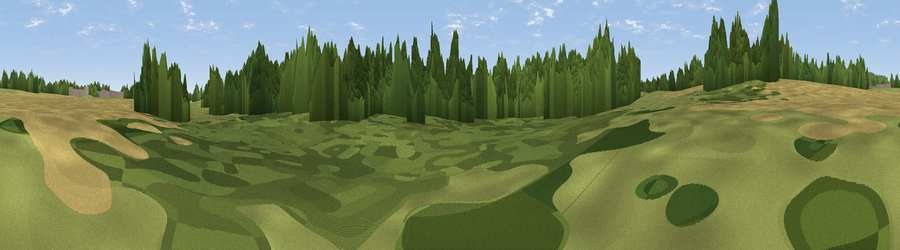

Viewpoint near Upton Magna
#45295 in England · top 99% of its area beats it · near Upton MagnaWhere it is
The exact computed spot (SJ 55294 10922). Click the marker for map links.
The view, rendered

A 360° render of this exact spot computed from the terrain model, tree cover and land cover — summer colours, afternoon light, calibrated against photographs of famous viewpoints. Real trees, hedges and buildings will differ in detail.
The panorama
Grey silhouette: terrain skyline in each direction (720 bearings, Earth curvature and refraction included). Dashed green: skyline with trees (+15 m) and buildings (+8 m) as obstacles. Blue strip: how far the ground is visible on each bearing.
Where the view opens
Wedge length = distance to the farthest visible ground on that bearing (vegetation-aware). Rings at 10, 25 and 50 km.
What fills the view
62% woodland · 23% grassland · 14% cropland
Angular shares of the visible panorama (visual magnitude), not map area. Landscape diversity 0.40 (0–1 Shannon).
Key numbers
More beautiful places nearby
The staircase of upgrades: each row has a higher view potential than everything closer. Driving times are estimates from straight-line distance, calibrated against real road routing — check an actual route before setting out.
| Place | Direction | Drive | Score |
|---|---|---|---|
| Viewpoint near Atcham | SSE · 1 km | ~3 min | 28.6 |
| Viewpoint near Uffington | NNW · 3 km | ~6 min | 70.6 |
| Viewpoint near Uffington | NNW · 3 km | ~8 min | 71.0 |
| Little Hill | ESE · 7 km | ~15 min | 78.2 |
| Viewpoint near Little Wenlock | ESE · 8 km | ~16 min | 86.6 |
| North Hill | SSE · 68 km | ~91 min | 86.8 |
| Worcestershire Beacon | SSE · 69 km | ~92 min | 87.1 |
| Viewpoint near Cartmel | N · 170 km | ~191 min | 87.2 |
52.69412, -2.66292 · source: osm viewpoint · position refined by local search. Computed location — check access rights before visiting.